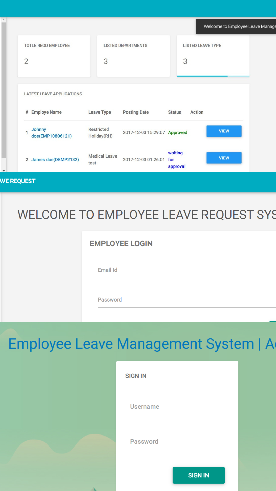

My Recent Work
School Website and admin and super admin panels using php,sql,css and Js

Website creation about employee leave management system using php, css and js
Creating designs for major holidays in Indonesia for Instagram posts using Canva
Report using google data studio to record design posts on instagram
Architectural Flowchart Making, Project Design Mockup, Mind Mapping Making

The Jaklingko Event Committee in order to promote the Jaklingko application and promote the integrated tariff which was held in front of the Old City Station
Report Using Google Data Studio